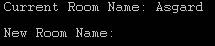
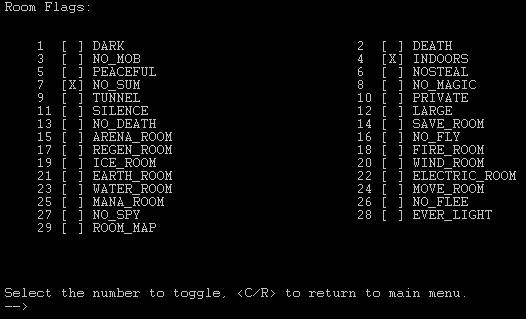
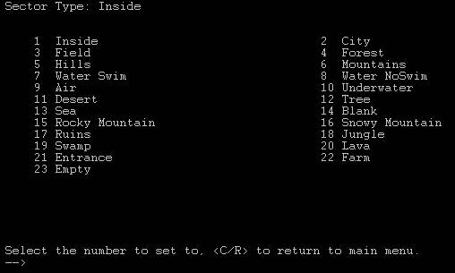

|
Basic Room Building For a complete walk-through, check out the Guide to Building on Havok: these pages are intended as quick-references. You should have a good idea of what your finished zone will look like before you begin to build very much of it. A zone will 99 times out of 100 come out much nicer if the builder was working off a map that had notes and descriptions and such labeled on it. You should do this too. III.1: Create It Go to the second room of your zone, using go (vnum). Teleporting into a nonexistent room will automatically create it for you. Alternatively, you can use create (startvnum) (endvnum), and all of the vnums including and between your STARTvnum and your ENDvnum will be created. I recommend against creating an entire zone at once. Zones tend to come out more polished if they get taken on one chunk at a time. Also, wizset fast (see chapter IV.4) requires uncreated rooms to work. III.2: Redit While standing in your room, type redit. You’ll be brought into a VT100 Terminal that looks like this: (use your imagination) This example is from Asgard, which you should be familiar with. Asgard – as you should know – is vnum 1000. You have five options from the main menu. Go through them one-by-one.
III.2.1: Name Type 1 and hit enter, and you’ll see this:  Type in your room name just as you want it to appear. Style Note: The name of a room should be in caps, just like the title of a book. Each room should have a name that is at least mostly unique. You should not have twenty rooms in a zone all named ‘Forest’.
III.2.2: Description Type 2 and hit enter, and you’ll be in the Description menu. Type in your room description exactly as you want it to appear in the game. When you’re done, type /w on a new line and hit enter. See Chapter VI for tips on making your rooms interesting. Style Note: You should indent three spaces on the first line, and there should be just one space between each sentence. Only in very rare cases should there be more than one paragraph in a room description. Each line should have between 60 and 70 characters (letters, including spaces), and if you have fewer than three lines, your room is probably not descriptive enough.
III.2.3: Room Flags Hit 3 from the main menu, and you’ll see this: 
Basically, just type the number of the flag, and it will toggle it on or off. Here’s what they all do: Dark: makes the room perpetually dark, you can’t see without a light source. Death: makes the room a death trap. You die upon entering. No_Mob: mobs can’t enter this room. Useful for keeping groups of mobs separate. Indoors: prevents the use of certain skills and spells, mostly ranger and druid. Peaceful: prevents players or mobs from fighting each other. Nosteal: prevents players or mobs from stealing from each other. No_Sum: prevents summoning from or portalling to this room. No_Magic: prevents the use of magic in this room. Tunnel: makes the room small, so only a couple people and mobs can fit in it. Use edit tunn x together with this (See Chapter V). Private: makes it so Immortals can’t pop into the room. Silence: prevents players from talking, including magic that requires words. Large: makes the room extra big, so that lots of people can be fighting at once. Arena_Room: flags the room as ‘arena’. Players will die as if in an arena. No_Fly: you can’t fly in this room. Regen_Room: Regeneration rates are sped up in this room. Fire/Ice/Wind/Earth/Electric/Water_Room: Players will take the appropriate sort of damage while in this room. Move_Room: players will lose vitality while in this room. Mana_Room: players will lose mana while in this room. No_Flee: I need to look into this one… either you can’t flee out of it or you can’t flee into it. No_Spy: You can’t use the ‘spy’ skills/spells to look into this room. Ever_Light: the room is perpetually lit – it’s never dark. Room_Map: this uses Banon’s nifty little map thing. I don’t know how it works.
III.2.4: Sector Types Enter 4 from the main menu, and you’ll see this: 
As of this printing, almost none of these actually do anything. Inside will suppress weather messages to the players. Water Swim/NoSwim are useful, and Forest is required to cast certain ranger/druid spells, but aside from that, this is just cosmetic. However, you should still select the one that resembles most closely your new room, because who knows? We might eventually make all of these unique. Style Note: if your room is indoors, MAKE SURE to flag the sector as inside.
III.2.5: Exits We’ll deal with exits in the next chapter.
Page © 2004 Nathan Walker for HavokMUD
|